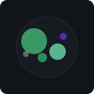

Hi! I'm

Software Engineer pursuing an MS in Computer Science at Columbia University.
I build scalable software systems and polished user-focused applications across web development, cloud infrastructure, algorithms, and AI. Previously worked at Northrop Grumman developing CI/CD automation, distributed systems, and real-time visualization tools. Passionate about creating technology that combines strong engineering with thoughtful design.
Projects

Excel-Inspired Spreadsheet

Automated AI Media Translation Pipeline

Squeeze: Image Compression Tool

Spotify Profile Stats

Agar.io Clone
Skills
- Python
- Java
- C++
- C#
- .NET
- JavaScript
- HTML
- React.js
- Next.js
- Docker
- AWS
- Git
- REST APIs
- OpenAI